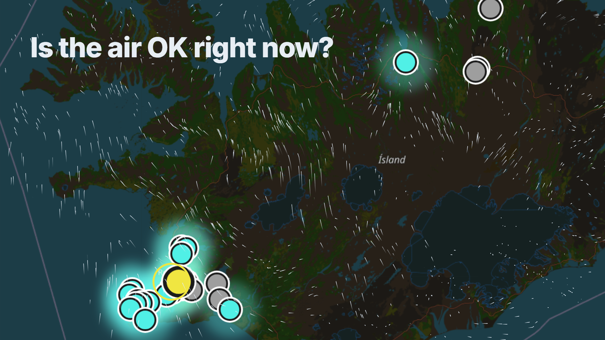
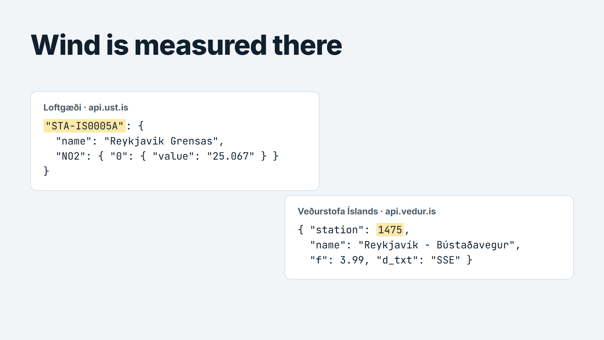
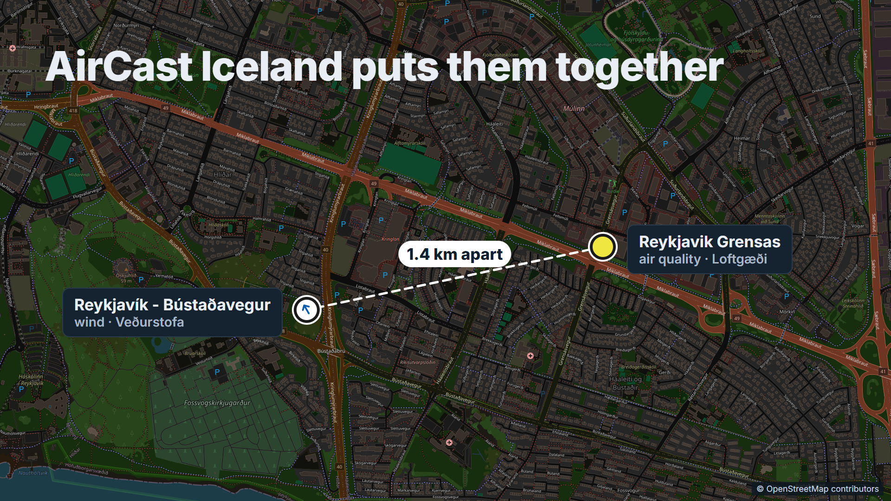
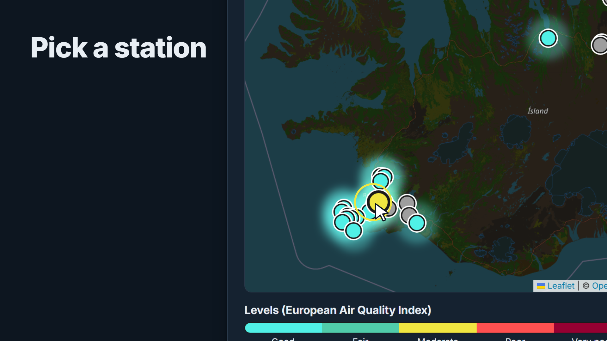
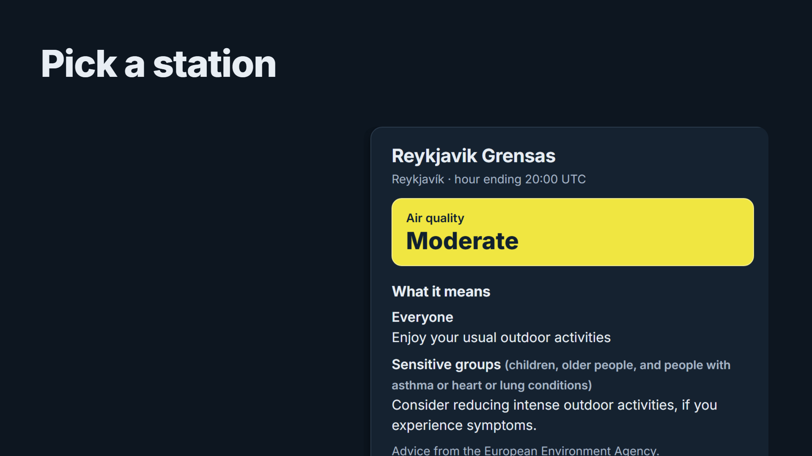
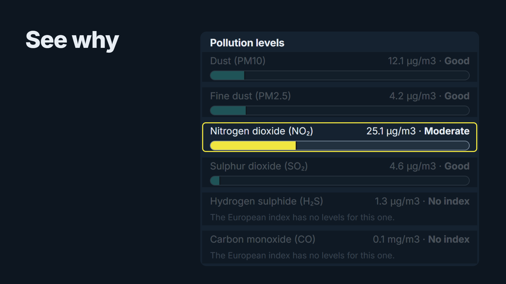
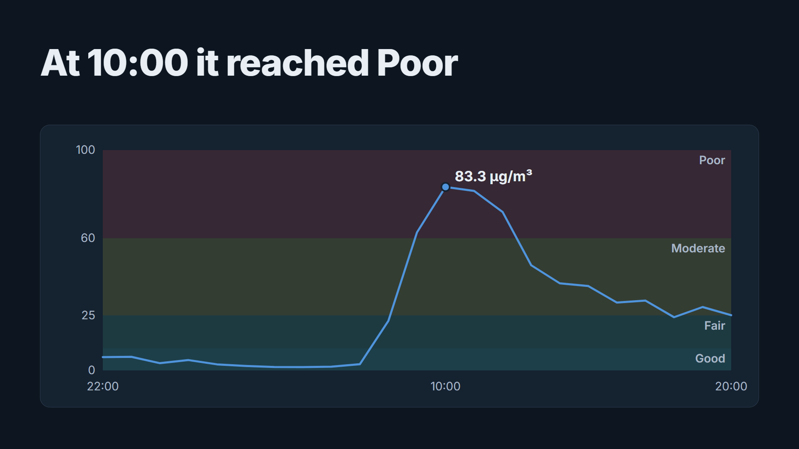
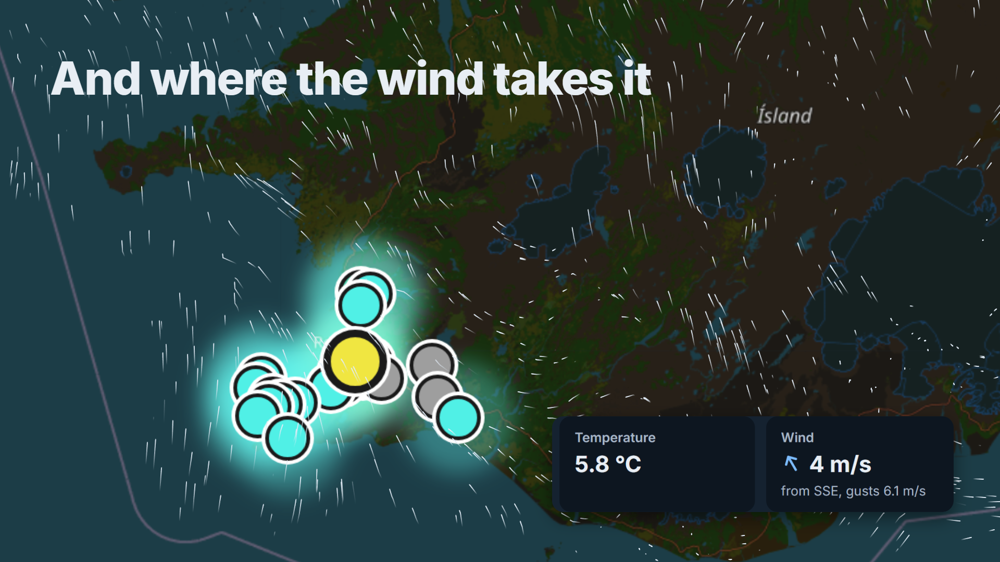
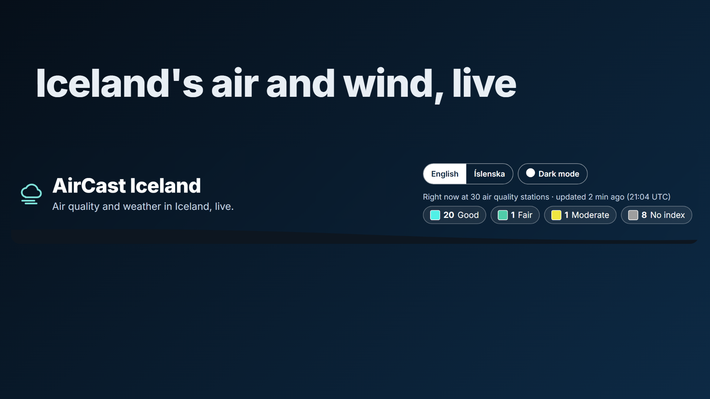
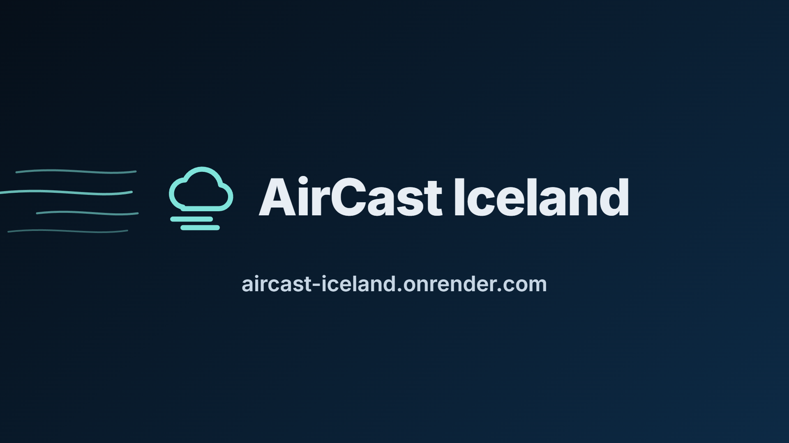

40 s, 1920×1080, with a voice (Kokoro “Heart”, made on this computer) and the same words as titles, so it also works muted. Real site captured 30.10.2026, real data snapshot from 21:04 UTC. The stills below are from the final, animated film.
Looking at the first version of this page showed which frames were weak before anything was animated. These changes were made to the storyboard, then built into the film:
After the storyboard, a voice was added and every frame was retimed to it. Later, the names in frame 4 were respelled for the voice so it says them the Icelandic way.

Real AirCast map, wind streaks moving; Grensás, the one yellow dot, pulses once. "Is the air OK right now?"
Voice: “Is the air in Iceland safe to breathe right now?”

Real records from Loftgæði and Veðurstofa, with different station IDs.
Voice: “Air quality is measured by one agency. Wind, by another.”

"AirCast Iceland puts them together": the real Reykjavík map, the air station and the nearest wind station, 1.4 km apart.
Voice: “AirCast Iceland puts them together on one map.”

The cursor clicks Grensás on the real site.
Voice: “Pick a station, like Grenn-souse in Rake-ya-veek.” (Grensás in Reykjavík, spelt so the English voice says them the Icelandic way.)

The real badge, pushed in.
Voice: “Right now: moderate.”

The real list of all six pollutants; the others dim, NO₂ (25.1 µg/m³, Moderate) stays lit.
Voice: “Nitrogen dioxide is the reason.”

Real hourly NO₂: "At 10:00 it reached Poor" (83.3 µg/m³).
Voice: “At ten this morning, it reached poor.”

Pushed in on Reykjavík, wind flowing; the real wind tile, 4 m/s from SSE.
Voice: “And the wind shows where it's going: four metres a second, from the south-southeast.”

"Iceland's air and wind, live" with the real header and its live summary right under it, at 1.5x.
Voice: “Iceland's air and wind, live.”

AirCast's own mark, carried in on wind streaks, and name; aircast-iceland.onrender.com.
Voice: “AirCast Iceland. Try it now.”